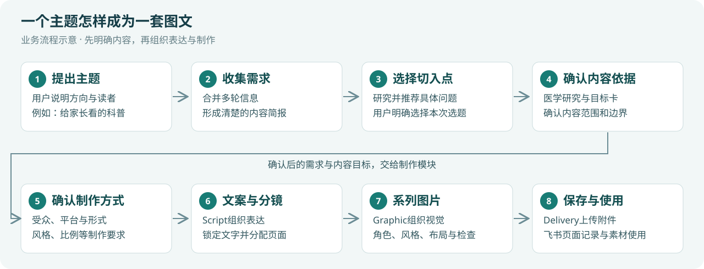
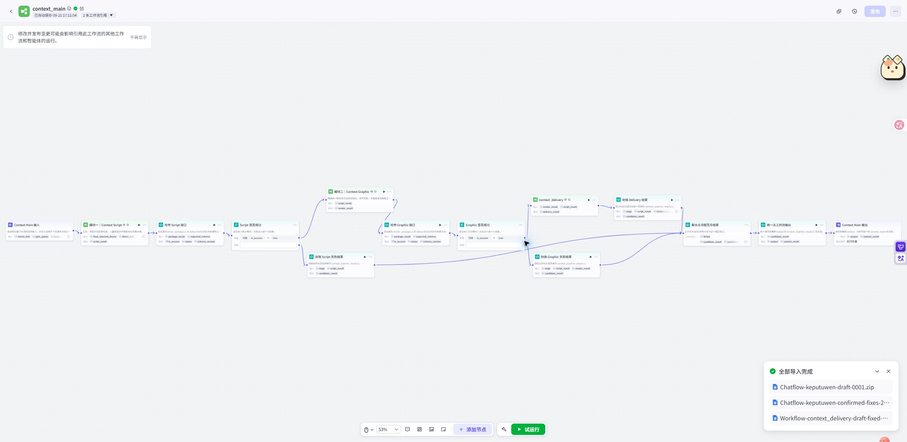
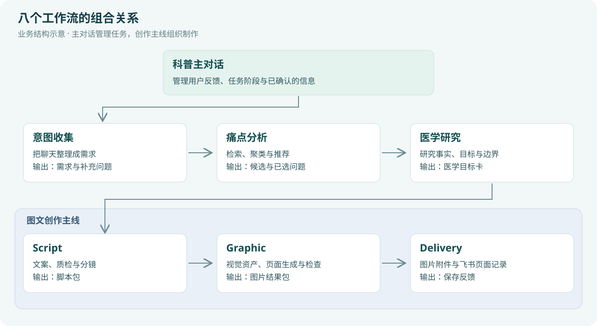
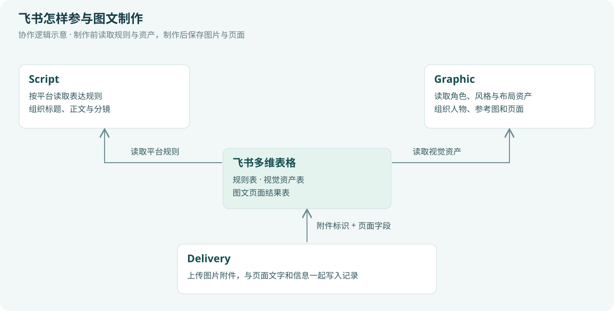

医疗科普图文系统：从主题到系列图片
本仓库另提供一套可安装到 Codex、WorkBuddy 等智能体中的独立 Skill。工作流与 Skill 是两套：下文说明 Coze 实现；Skill 由当前智能体执行，不会自动接通 Coze。
在Coze中，这套系统把内容制作拆成八个可以协作的工作流：从理解用户想做什么开始，经过选题与医学研究，最后完成文案、分镜、图片和飞书归档。
这份文档面向想了解系统、使用系统，或借鉴它搭建其他业务流程的读者。可以从图文展示版完整阅读，也可以按下面的主题选择章节。
文档导航
先看整体

系统中有两层组织：主对话管理人与任务的沟通，图文创作主线管理一次内容生产。 意图收集、痛点分析和医学研究为创作准备输入；Script、Graphic和Delivery把输入依次转成文案分镜、图片和保存结果。
| 层次 |
工作流 |
作用 |
| 对话与任务 |
科普主对话 |
理解本轮反馈，记录阶段和已确认的信息，安排下一步 |
| 内容准备 |
意图收集、痛点分析、医学研究 |
明确要做什么、讲哪个问题、依据什么讲 |
| 生产调度 |
图文创作主线 |
串联脚本、图像和保存三个模块 |
| 内容生产 |
Script、Graphic、Delivery |
形成文字、页面图片及飞书内容记录 |
用一个例子理解
用户提出：“我想做儿童鼻炎科普，主要给家长看。”
系统先把这句话整理成需求，继续了解这次想讲的具体内容。需求明确后，痛点分析提供可选的切入点；用户选择后，医学研究形成内容依据与目标。再确认平台、受众版本、形式、风格和比例，图文主线便可以按这些要求组织制作。
“儿童鼻炎”始终是科普方向，某次选择的具体问题是本次选题。“换一个切入点”保留原方向，“改成水彩”调整制作表达，“重新做儿童睡眠”才进入另一项主题任务。
看看制作模块

Script决定内容，Graphic形成画面，Delivery组织保存。 飞书既提供平台规则与视觉资产，也接收最后的页面记录和图片附件。
具体的角色一致性、不同风格生成和附件写入过程见图文生成与飞书协作。
看看页面产物
这三张取自系统一次六页生成的原始候选。它们展示了标题、人物、场景、知识图示和分区文字如何组合；六页完整效果与页面作用见图文效果与应用案例。
这套做法还能用在哪里
只需要整理用户需求时，可以借鉴“新消息+历史需求→提取与补问→统一结果”的意图收集结构；已经有分镜时，可以独立使用Graphic；已经有图文时，可以独立使用Delivery。
拓展到新领域时，可以把医疗需求字段换成课程、教程或培训字段，把医学资料与角色库换成该领域的知识和视觉资产，沿用分阶段确认、模块交接和系列制作的组织方法。具体案例见模块复用与拓展。
阅读与使用
双击展示.html可以离线阅读，图文版将截图缩成工作流概览，点击图片可查看原图。转交时保留整个目录即可。
文中的流程举例用于解释使用方式，课程与教程案例用于说明迁移设计。调用现有医疗模块时，按模块输入约定准备数据；效果图保留候选素材属性。
一个主题怎样变成一套图文
使用系统时，用户持续说明“想做什么”和“这一版希望怎样调整”。主对话负责把这些信息安排到相应阶段，内容准备与制作工作流在各自阶段完成任务。
下面用“面向家长的儿童鼻炎科普”说明整体流程。示例用于解释操作逻辑，具体选题和医学内容由实际需求与研究结果决定。
1. 把一个想法变成内容需求
用户可以从一句话开始：
我想做一组儿童鼻炎科普，主要给家长看。
这句话已经提供了方向和读者。意图收集会保存这些信息，再了解本次想讲的具体困扰、内容范围或情境。用户后续补充年龄、发布平台或风格时，系统把新信息合并到同一份需求中。
| 需求维度 |
在内容制作中的用途 |
| 科普方向 |
决定本次研究与创作的范围 |
| 目标读者与年龄 |
决定解释深度、词语和场景 |
| 具体困扰或内容范围 |
帮助选题从大主题落到可讲清楚的问题 |
| 平台与形式 |
决定文案组织和页面表达方式 |
| 风格与比例 |
决定后续视觉制作要求 |
需求可以分多轮完成。用户已确认的信息持续保留，新的消息用于补充或修改这份需求。
2. 从大主题里挑一个切入点
“儿童鼻炎科普”可以包含很多问题。痛点分析通过检索、提炼和归类，整理出若干具体选题，让用户比较和选择。
用户可以询问某个选题是什么意思，比较两个切入点，或提出“更偏家庭场景”的推荐偏好。候选选题只是本次内容的入口，不会替换原始科普方向。
用户明确选择一个选题后，系统进入医学研究。后续资料查找、文案和图片由此获得共同的内容目标。
3. 为选题建立内容依据
医学研究结合知识库和网页材料，提取与已选问题相关的事实，形成医学目标卡。
目标卡说明本次要让读者理解什么、哪些表达有依据、哪些表述需要避开，以及内容适用的边界。用户可以据此确认、要求调整研究重点，或返回重新选题。
证据不足时，系统会说明能够表达的范围，再由用户决定是否按受限范围继续。后续文案和图片继续沿用这一范围。
4. 确认制作方式
内容目标确定后，系统整理五项制作参数，用户可以直接修改其中一项。
| 参数 |
示例选择 |
对产物的影响 |
| 受众版本 |
家长版、儿童版、亲子版 |
解释方式、互动方式和文字难度 |
| 发布平台 |
小红书、公众号、抖音图文等已配置平台 |
标题、正文和页面组织规则 |
| 内容形式 |
图文轮播、Q&A、绘本、漫画、互动卡 |
整套内容的阅读方式 |
| 图片风格 |
3D卡通温馨、手绘水彩、写实插画 |
人物、材质、配色和画面气质 |
| 图片比例 |
竖版9:16、横版16:9、方图1:1 |
页面布局与展示空间 |
例如：“采用家长版、图文轮播、3D卡通温馨风格，竖版9:16。”系统根据这组选择整理草稿，用户确认后进入创作。
受众版本与原始读者分别记录。例如“6岁孩子的家长”属于面向家长的内容，“6岁孩子自己阅读”则需要儿童表达。
5. 先写内容，再分配页面
Script读取需求、已选痛点、医学目标和平台规则，选择家长、儿童或亲子创作分支。
它先生成与检查文案，再锁定标题和正文，最后把内容拆成逐页分镜。分镜决定每页的文字、信息重点、画面情境和呈现要求。
这一步的结果是一份可以交给视觉模块使用的制作说明。团队也可以停在这里，把文案和分镜交给人工设计继续制作。
6. 把分镜做成系列图片
Graphic读取整套分镜，识别哪些人物、场景和辅助形象需要出现，然后从资产库匹配参考，准备统一风格与角色设定。
完成全局页面规划后，系统逐页生成图片候选，检查画面文字、人物和视觉表现，再按需要安排定向重试。最终按页汇总候选素材与检查结果。
用户得到的是一套围绕同一选题组织的页面图，而文案、分镜、风格和角色参考各有来源，可以分别继续调整。
7. 将页面整理进飞书
Delivery接收文案分镜包和图片结果，按页整理信息，将图片上传为飞书附件，再创建对应页面记录。
团队可以在飞书中查看内容、图片、批次与页面信息，安排后续复核和选用。生成结果和保存结果分别反馈，便于先使用已有素材，再处理归档。
8. 使用者的操作SOP
| 步骤 |
用户或内容策划做什么 |
系统接着做什么 |
这一阶段得到什么 |
| 提出需求 |
说明主题、读者和希望讲的内容 |
保存已知信息，补充必要问题 |
清楚的内容需求 |
| 选择选题 |
比较候选，明确选一个切入点 |
围绕该问题研究 |
确定的本次选题 |
| 确认目标 |
阅读医学目标与范围，提出调整或确认 |
保留确认后的内容依据 |
医学目标卡 |
| 确认参数 |
选择受众、平台、形式、风格、比例 |
整理制作方案并调用创作 |
明确的制作要求 |
| 查看内容 |
阅读文案、分镜和候选图片 |
汇总页面结果 |
可查看的内容素材 |
| 选用归档 |
按页复核、确认采用素材，查看飞书记录 |
提供保存结果和页面信息 |
可供团队继续使用的内容记录 |
这几个阶段的确认对象不同。确认选题是在决定研究哪个问题；确认医学目标是在决定内容范围；确认制作参数是在决定怎样表达。
9. 怎样处理不同主题和修改
系统同时记住四类信息：方向、当前选题、已确认的制作要求、当前阶段。主对话结合这些信息理解用户本轮的修改。
| 用户说什么 |
系统怎样理解 |
哪些内容可以沿用 |
| “这个选题是什么意思？” |
仍在讨论当前候选 |
原方向、候选和需求 |
| “仍做鼻炎，换一个问题讲。” |
同方向更换选题 |
读者、平台等需求；医学与创作按新问题更新 |
| “给家长的，改成亲子一起看。” |
调整表达对象与版本 |
原方向与仍适用的内容依据；重新组织表达 |
| “风格改成手绘水彩。” |
调整视觉制作要求 |
已确认的方向、选题和仍适用的内容 |
| “重新做儿童睡眠科普。” |
更换科普方向，进入新任务 |
按新任务重新确认所需信息 |
同方向重推荐会保留累计次数。累计成功重推荐达到五轮时，系统请用户补充更具体的偏好，再继续推荐，让讨论逐步收敛到可制作的选题。
下一章：八个工作流各自负责什么
八个工作流各自负责什么
系统把任务拆分，让每个模块处理明确的问题，并把整理好的结果交给下一步。理解交接关系后，就能知道哪些模块需要一起使用，哪些可以独立调用。
这里有两种“意图”处理：主对话识别用户本轮正在做什么，意图收集整理用户想制作什么内容。 前者决定走哪条流程，后者形成制作所需的需求。

1. 科普主对话：理解本轮动作，安排下一步
作用： 管理整项任务与用户的多轮沟通。它结合当前阶段和已保存的信息，区分用户是在补需求、问候选、选题、确认医学目标、改参数，还是开始新主题。
它接收用户消息，读取已知需求、候选、目标卡和内容结果，再选择需要调用的子工作流。用户看到的是自然语言，后台保存的是后续可继续使用的任务信息。
例如，同样一句“继续”，在已说明医学限制后可能表示接受受限版，在参数草稿之后则需要结合明确的确认对象理解。主对话让用户反馈进入对应业务阶段。
怎样组合： 调用意图收集、痛点分析、医学研究和图文创作主线，根据返回结果更新任务状态，再把有用的内容呈现给用户。
2. 意图收集：把聊天整理成内容简报
作用： 将零散的自然语言逐步整理为完整需求。它同时读取本轮消息和历史需求，提取新信息、继承已知信息，并判断下一步还需要问什么。
例如，用户先说“做鼻炎科普”，再说“给6岁孩子的家长看”，系统应把两次回答合并：方向是鼻炎，读者是6岁孩子的家长。之后用户补充风格时，原来的方向与读者继续保留。
| 接收 |
处理 |
输出 |
| 新消息 + 历史需求 |
提取、合并、识别缺项、确认冲突 |
更新后的需求 + 是否完整 + 给用户的下一句回复 |
这份需求随后供痛点分析生成检索方向，也供Script和Graphic理解读者、平台、风格等要求。未收集完整时，主对话保存当前信息，再接收下一轮补充。
可复用的想法： 把“需要知道哪些信息”“哪些已确认”“还有什么要问”分开记录。这个结构也能用于课程简报、产品需求访谈和服务需求收集。
3. 痛点分析：把大方向变成可选的问题
作用： 帮用户找到内容的具体切入点。它从需求和新偏好生成关键词，进行九路搜索与网页提炼，再对问题去重、聚类、排序，整理成候选选题及说明。
面对“儿童鼻炎”，内容策划可以先比较不同困惑，再选择这次要讲清楚的问题。候选说明帮助用户理解选题的生活场景、认知与行为切入点。
它接收结构化需求和用户补充偏好，输出候选列表。用户明确选定其中一个后，主对话把单个已选对象交给医学研究。
怎样组合： 意图收集限定研究范围，痛点分析提出切入点，医学研究为选中的切入点寻找依据。候选来自资料整理，不等同于经过统计验证的关注度排行。
4. 医学研究：把选题转成有依据的内容目标
作用： 为内容创作准备事实、目标和边界。它根据已选痛点检索知识库，在需要时补充网页材料，再提取医学事实，形成医学目标卡。
这张卡把后续创作需要共同遵守的信息集中起来：本次重点解释什么、依据哪些材料、有哪些限制、哪些表达应避免。
| 输入 |
输出 |
下游用途 |
| 需求、单个已选痛点、研究调整要求 |
医学目标卡、来源及范围说明 |
Script据此写文案，主对话据此向用户确认 |
用户确认后，医学目标与制作要求一起进入Script。医学研究负责知识依据，Script负责把它转成适合读者的表达。
5. 图文创作主线：组织一次完整制作
作用： 把已经确认的需求和内容目标，依次交给三个制作模块。
它接收本次选题、需求、已选痛点和医学目标卡，调用Script；获得脚本分镜后调用Graphic；拿到图片结果后调用Delivery。各模块结果最后统一汇总，交回主对话。
组合的意义： 内容准备与内容生产具有明确的交接点。上游负责“这次要做什么”，主线负责“按顺序完成制作”，三个子模块各自产出可继续使用的结果。
6. Script：把内容目标写成文案和分镜
作用： 决定信息怎样讲、怎样分配到页面。它读取平台规则，根据家长、儿童、亲子模式分别组织语言，完成文案生成与质检，再锁定文字并生成分镜。
家长表达侧重解释与可理解的内容组织；儿童表达需要适龄语言和场景；亲子表达则需要便于共同阅读或互动。相同选题因此可以形成不同的讲述方式。
它输出标题、正文与逐页分镜的脚本包。Graphic使用它安排画面，Delivery使用其中的文字和元信息整理页面记录。团队也可以独立使用Script获取文案与设计说明。
7. Graphic：把分镜变成系列视觉
作用： 组织整套图片的角色、风格、布局与生成。它先识别跨页人物和场景需求，再匹配资产、准备参考、规划整套页面，最后逐页生图与检查。
已有角色或风格可以直接进入匹配；需要新的持续角色或派生风格时，则先准备母版、检查并锁定，再提供给页面制作。反复同框的人物还可以通过组合锚点约束相互关系。
每页生成候选后，系统结合OCR文字检查与视觉检查整理结果，必要时定向重试，最终输出页面素材包。
怎样组合： Script提供内容与分镜，飞书提供资产候选，Graphic形成图片，Delivery接着归档。
8. Delivery：把内容变成可管理的页面记录
作用： 将生成结果按页整理，并保存到飞书。它同时读取Script与Graphic的结果，使文字、图片、版本、风格和页面信息能够对应起来。
图片先上传为飞书附件，再与页面字段一起写入多维表格。保存结果随后返回主线与主对话。
团队可以按批次、主题和页面查找内容，并继续安排复核、选图和后续使用。相同的归档思路也可以用于其他图文生产项目。
怎样按目的组合
| 想完成的事情 |
使用的组合 |
得到的产物 |
| 先把用户需求问清楚 |
主对话 + 意图收集 |
内容需求简报 |
| 给内容策划准备选题 |
意图收集 + 痛点分析 |
需求背景与候选选题 |
| 为已选问题准备依据 |
医学研究 |
医学目标卡与来源 |
| 只要文案和设计说明 |
Script |
标题、正文、逐页分镜 |
| 已有合规脚本包，制作系列图片 |
Graphic |
页面候选图与检查结果 |
| 已有脚本包和图片包，整理入库 |
Delivery |
飞书附件与页面记录 |
| 从用户想法开始制作内容 |
主对话 + 内容准备模块 + 图文创作主线 |
从需求到图文素材及保存反馈的完整任务 |
独立调用仍需按对应模块的输入约定准备数据。具体准备方法见模块复用与拓展。
图文怎样生成，又怎样与飞书协作
最后的图文创作主线由Script、Graphic和Delivery三个工作流组成。它们分别处理内容、视觉与保存，飞书为这条链路提供规则和素材，也接收制作结果。
1. 从需求到每一页的画面说明
Script接收四类信息：本次具体选题、完整需求、已选痛点、医学目标卡。平台规则再补充发布场景中的表达要求。
它据此完成文案，检查后锁定标题和正文，再输出逐页分镜。分镜把“整篇内容”转成“这一页需要讲什么、画什么”。Graphic由此获得每页的文字、情境和视觉重点。
| 阶段 |
输入内容怎样变化 |
给后续带来的帮助 |
| 需求与目标 |
知道读者、问题、内容边界和表达要求 |
制作围绕同一个目标展开 |
| 文案 |
将依据整理成读者能理解的标题和正文 |
确定信息与文字 |
| 分镜 |
把文案分配到页面，并说明画面情境 |
让生图有明确的页面任务 |
| 页面生成包 |
把分镜、角色、风格、布局与参考图合并 |
每次生图得到相对完整的制作约束 |
2. 飞书在三个位置提供帮助

| 使用位置 |
飞书提供或接收什么 |
系统怎样使用 |
| Script制作前 |
平台表达规则 |
按用户选择的平台匹配规则，影响标题、正文与内容组织 |
| Graphic制作前 |
主角、科普角色、疾病形象、风格和布局模板 |
匹配本次分镜需要的角色、视觉参考与页面资源 |
| Delivery制作后 |
页面结果记录和图片附件 |
将本批图文组织为可查找、可协作的内容资料 |
规则和资产由表格管理后，团队可以持续积累可复用的人物、风格和版式。工作流读取这些配置，再把它们组合到本次主题中。
3. 不同风格怎样形成
风格首先是制作需求中的一项选择，例如3D卡通温馨、手绘水彩或写实插画。Graphic将它与分镜需求一起处理，形成可用于整套页面的视觉约束。
已有风格资产： 从风格库读取候选，匹配并锁定参考，将它纳入后续角色与页面制作。
派生风格： 根据本次要求编译风格设定，生成风格母版，检查后锁定，再从母版提炼系列风格语法。
两条路径最后汇合。页面任务共同继承风格参考与风格语法，使色彩、材质、人物表现和页面氛围围绕同一套设定展开。
| 风格方向 |
制作时需要明确的内容 |
可借鉴的使用方式 |
| 3D卡通温馨 |
圆润造型、材质、柔和色彩与光线等设定 |
家庭情境、人物陪伴、亲子内容 |
| 手绘水彩 |
笔触、纸感、配色和人物画法等设定 |
故事阅读、情境表达、柔和插画 |
| 写实插画 |
人物比例、场景细节和画面质感等设定 |
更贴近现实场景的图解与说明 |
表中展示风格配置思路；本说明中的实际候选样张为3D卡通方向。选定风格后仍会根据本次页面内容进行具体设计。
4. 多页图片怎样保持人物与表达一致
Graphic先从整套分镜识别持续角色、局部角色和场景。需要跨页出现的人物会形成统一的参考来源；已有合适角色时使用资产库，需要补充时先制作角色母版。
系统还会建立系列视觉事实库，将角色身份、风格和辅助资产放在一起。经常共同出现的人物可以生成组合锚点，让后续页面参考同一组人物关系。
| 一致性依据 |
记录或约束的内容 |
| 角色参考 |
同一个人物的身份、外观和辨识特征 |
| 风格参考 |
整套内容的色彩、材质和画面气质 |
| 组合锚点 |
需要反复同框的人物及相互关系 |
| 全局页面设计 |
各页的信息层次、布局节奏和视觉分工 |
| 锁定文字 |
页面中应当呈现的标题与正文 |
这些信息会进入逐页生成包。它为系列图文提供共同参考，也让后续检查有具体依据。
5. 每页怎样生成和检查
每页先生成两个候选，再检查文字与视觉表现。OCR用于读取候选中的文字，与本页应有文字对照；视觉检查关注人物、风格和画面组织。
需要调整时，系统编译有针对性的重试指令，再生成候选。结果按页保留，最终汇总候选图、检查意见和缺页等页面信息。
对内容团队来说，这一步提供了可继续选择与复核的素材。对系统设计来说，图片、文字和检查意见始终能对应到同一页。
6. 图片怎样真正进入飞书表格
Delivery同时拿到Script与Graphic结果，先把本次主题、受众版本、风格、比例以及逐页内容整理到一起。
工作流通过飞书插件读取表格，并在需要时取得应用访问凭证。保存时，图片按以下路径进入多维表格：
已有图片地址 → 获取图片文件 → 上传为飞书图片附件 → 取得附件标识 → 与页面字段一起构造记录 → 批量写入多维表格。
附件标识在技术上是file_token。多维表格图片列用它关联实际附件，用户便可以在记录中查看图片。
| 页面记录中的信息类别 |
用途 |
| 主题、批次、页码 |
查找同一篇内容及其全部页面 |
| 标题、正文和页面说明 |
保留图文中的内容信息 |
| 受众版本、风格和比例 |
理解这套内容的制作方式 |
| 候选或采用图片附件 |
查看、比较与使用图像素材 |
| 页面检查及保存结果 |
支持后续复核与内容管理 |
上表说明记录的组织思路，具体列名和枚举由实际飞书表配置决定。图片生成、页面检查和保存情况分别记录，用户可以清楚知道已经获得了哪些素材，以及它们怎样被整理。
7. 这条链路给团队留下什么
制作完成后，可分别使用文案、分镜、候选图片和页面记录：文案可以继续编辑，分镜可以交给设计人员，图片可以进入选用流程，飞书记录可以作为内容资料库的组成部分。
风格、角色和平台规则也能持续积累，供后续主题再次调用。新主题沿用生产结构，同时替换本次的问题、内容依据和场景需求。
下一章：看看一套图文怎样组织
图文效果与应用案例
系统的产物包括内容准备、文案分镜和图像页面。把它们分开保存，可以让同一套内容以不同方式进入团队的制作流程。
1. 最后得到哪些内容
| 产物 |
可以怎样使用 |
| 已确认的需求 |
作为本次制作简报，后续修改有共同依据 |
| 候选选题与已选痛点 |
支持内容策划，保留本次切入点 |
| 医学目标与来源 |
为文案和人工复核提供内容范围 |
| 标题与正文 |
供编辑修改、平台适配或内容再利用 |
| 逐页分镜 |
供生图模块或人工设计制作页面 |
| 页面候选图 |
供选图、复核及后续修改 |
| 飞书页面记录 |
按主题、批次和页码组织团队内容 |
2. 六页候选图示例
以下六张取自2026-09-21系统一次真实六页生成，用于展示图文的页面结构与视觉表达。它们保留原始候选样张属性。
这批候选展示了标题、人物、家庭情境、科普角色、器官图示和分区文字的组合方式。样张用于观察制作形式，医学表述与文字采用前由内容团队复核。
3. 一套图文的阅读逻辑
以上页面可以从内容组织的角度理解：
| 页面作用 |
回答读者的哪类问题 |
制作上的表达方式 |
| 封面 |
这篇内容与我有什么关系？ |
大标题、核心人物和主题场景 |
| 读者困惑 |
它是不是在说我关心的事？ |
问题、对话气泡和生活感受 |
| 知识解释 |
我需要先理解什么？ |
简化图示、分区说明和科普角色 |
| 误区辨析 |
哪些直觉需要重新理解？ |
对照关系与重点信息 |
| 行动信息 |
阅读后应该关注什么？ |
分条信息与场景化表达 |
| 生活场景 |
这些信息怎样回到日常？ |
家庭或生活画面与收束内容 |
实际页数与顺序由分镜决定。这个案例展示了从“吸引注意”到“解释问题”、再到“回到场景”的组织方法，可以借鉴到其他知识图文中。
4. 同一个主题可以怎样变化
以“儿童鼻炎科普”为方向，可以从三个维度调整成品：
| 调整维度 |
示例 |
哪部分发生变化 |
| 具体切入点 |
从认识问题改为解释常见误区 |
研究重点、内容目标、文案和分镜 |
| 受众表达 |
从家长阅读改成亲子共读 |
语言、角色互动和页面形式 |
| 视觉方向 |
从3D卡通改成手绘水彩 |
风格参考、人物表现与页面画法 |
系统将这些要求分别管理，因此可以围绕同一内容方向讨论多种制作方案。具体成品仍需按相应参数重新制作。
5. 三种实际使用方式
内容策划使用。 先调用意图收集、痛点分析和医学研究，得到需求、选题与内容依据，再由编辑团队写作。
设计团队使用。 使用Script输出的文案与分镜，将其交给Graphic或人工设计，完成系列页面。
内容运营使用。 通过图文主线制作，再用Delivery把页面组织到飞书，便于查找、复核和选用。
三个角色可以使用同一条生产链的不同产物，减少重复解释本次主题、读者与制作要求。
下一章：怎样独立使用和迁移这些模块
怎样单独使用工作流，并借鉴到其他业务
这套系统有两种复用方式：一是按现有输入约定独立调用模块，二是保留组织方法，为新业务调整内容与数据结构。
前者可以拆开使用当前医疗科普模块；后者是在这些设计上构建新的流程。下面分别说明。
1. 单独使用意图收集：得到一份需求简报
适合的任务是“先把用户的想法问清楚”。例如内容策划人员只想整理一篇医疗科普的主题、读者、情境和制作偏好，暂时不需要选题或生图。
调用时把本轮消息和历史需求传入意图收集。它返回更新后的需求、完整性状态与自然语言回复。外层应用保存需求，把回复显示给用户，下一轮继续传入新消息与刚保存的信息。
组合方式： 对话入口 → 意图收集 → 保存需求并展示回复 → 接收下一轮消息。需求完整后，可以交给人工策划，也可以继续连接痛点分析。
2. 单独使用Script：只制作文案和分镜
适合“内容方向与医学依据已明确，想先看文字”的任务。
准备本次选题、完整需求、单个已选痛点和有效医学目标卡，传入Script。它按照平台和受众模式完成文案与分镜，结果可交给人工编辑、设计人员，或继续交给Graphic。
得到的价值： 文案和画面制作之间有明确的分工，团队可以先讨论每页内容，再安排图片制作。
3. 单独使用Graphic：按现成分镜制作图片
适合已经有符合约定的Script结果包，想围绕既定文字制作系列图文的任务。
将完整脚本包传给Graphic。包内包含分镜、内容及制作参数，Graphic接着处理风格、角色、布局和逐页生图。
例如，一套家长版医疗科普分镜已经确定，可以让Graphic依据包中的风格和参考制作页面。需要试另一种风格时，先调整并校验脚本包中的制作要求，再按新要求生成。
这里的输入是完整分镜包。手工编写分镜时，需要让页面与参数符合Graphic的输入格式；准备完成后，才进入视觉制作。
4. 单独使用Delivery：把已有图文整理入库
适合已经拿到Script和Graphic结果，接下来只需要保存到飞书的任务。
将两份结果包一起传入Delivery。它读取主题、页面信息与候选图，完成附件上传和记录整理。这种组合可以直接利用已有内容，归档模块本身不承担写文案或生图。
5. 在Coze中怎样连接这些模块
可以新建一条用于自己任务的工作流，先定义所需输入，再添加对应的“调用工作流”节点，将上一模块的输出真实引用到下一模块输入，最后整理需要给用户的结果。
| 模块 |
现有入口 |
返回结果 |
常见接法 |
| 意图收集 |
input、history_info |
完整性状态、用户回复、需求结果 |
交给主对话保存并继续沟通 |
| Script |
final_selected_theme、intent_info、pain_points、target_card |
script_result |
接Graphic，或交给人工编辑设计 |
| Graphic |
script_result |
render_result |
与Script结果一同交给Delivery |
| Delivery |
script_result、render_result |
delivery_result |
整理页面链接与保存反馈 |
需求业务字段统一放在intent_info.data内。Script、Graphic、Delivery的跨流程结果采用固定结构的JSON文本；结构化结果留在数据通道，面向用户展示对应的自然语言或图片。
实际连接时，输入槽应选择上游的真实变量。稳定的字段、层级与类型，让各模块能够组合。
6. 迁移例子一：课程策划的需求收集
假设用户说：“我想做一门给新员工看的产品入门课。”课程策划也需要逐轮整理需求，可以借鉴现有意图收集结构。
| 医疗科普中收集的内容 |
课程策划中可以改为 |
| 科普方向 |
课程主题 |
| 读者与年龄 |
学员角色与基础 |
| 具体困扰和情境 |
希望掌握的任务与使用场景 |
| 内容形式 |
微课、培训图卡、操作教程等 |
| 平台、风格、比例 |
课程载体与呈现要求 |
随后定义哪些是必需信息、哪些可以后续确认，保留“本轮消息+历史需求”的输入方式，以及“更新需求+下一句回复”的输出方式。模型提取、代码校验、保存端和下游读端应一起更新为课程字段。
可以形成的流程： 学员需求沟通 → 课程简报 → 内容目标 → 课程大纲。需要课件图文时，再接入为课程适配的文案与视觉模块。
7. 迁移例子二：产品使用教程的选题与图文
假设团队要制作一组“办公软件入门教程”。可以借鉴痛点分析的结构，先从帮助文档、常见咨询和用户反馈中提取问题，再去重、归类，形成可供选择的教程选题。
选择具体问题后，用官方产品资料与操作规范形成内容依据，再整理文案和分镜。视觉模块使用产品界面、操作步骤图和品牌资产，最终把图文保存到内容表。
| 保留的组织方法 |
为新领域调整的内容 |
| 需求收集、阶段确认 |
产品、用户角色、操作任务等需求字段 |
| 检索、聚类、推荐 |
帮助文档、真实咨询和反馈等资料来源 |
| 先确认依据，再创作 |
产品操作依据与版本适用范围 |
| 文案与分镜分工 |
步骤、示例、界面状态和文字规则 |
| 统一视觉参考 |
品牌风格、界面资产与图示规范 |
| 按页保存 |
教程主题、产品版本、步骤图及页面记录 |
现有医学目标卡为医疗领域设计。迁移时应为产品知识定义对应的依据结构，并同步改动生成、校验、读取和展示端。
8. 迁移例子三：企业培训图卡
假设企业已经有一份确认过的内部流程说明，希望做成培训图卡。可以借鉴后半段生产链：
确认后的说明材料 → 为培训编写文案与分镜 → 使用企业角色、图标与风格生成页面 → 保存到培训资料表。
这类任务可以从已有材料直接准备内容输入，按需要取用Script、Graphic、Delivery的组织方法。若需要严格保留界面、图表或标识，可以在视觉制作中结合现成资产和人工排版。
9. 复用时先明确五件事
| 要明确的问题 |
对应的设计 |
| 需要向用户了解什么？ |
需求字段、确认状态与追问规则 |
| 内容依据从哪里来？ |
知识库、文档来源与领域边界 |
| 用户最终要什么产物？ |
文案、分镜、图卡或完整内容链 |
| 画面怎样保持统一？ |
风格、人物、布局与参考资产 |
| 结果交给谁继续使用？ |
输出结构、保存位置与团队协作方式 |
这些问题确定后，再选择需要的工作流组合。模块之间的交接越明确，越容易为自己的场景取用和调整。
返回总览
使用说明
本页说明 Coze 工作流方案的阅读、搭建与使用。若要让 Codex、WorkBuddy 等智能体执行科普创作，请阅读Skill 安装与使用。两套方案分别运行，安装 Skill 不会替你导入或连接 Coze 工作流。
Coze 部分未附可直接导入的工作流导出包；tools/用于文档生成、发布检查和技能打包，skills/内另有独立技能及可选项目脚本。
1. 阅读文档
可以直接阅读GitHub首页README，再进入各章节。也可以从Code菜单选择Download ZIP，解压后双击docs/展示.html，离线查看完整图文版。
使用Git下载：
git clone https://github.com/luziyangz/coze-medical-infographic-system.git
cd coze-medical-infographic-system
这是公开仓库，阅读与下载不需要作者的账号权限。
| 想做什么 |
建议阅读顺序 |
| 了解系统 |
系统总览 → 工作流职责与组合 |
| 使用一项科普任务 |
整体流程与SOP → 图文效果与应用案例 |
| 了解视觉和飞书 |
图文生成与飞书协作 |
| 单独使用模块或迁移领域 |
模块复用与拓展 |
2. 修改文档并更新图文版
普通阅读不需要安装Python依赖。需要更新HTML时，使用Python 3.10或以上版本，并在仓库根目录执行：
python -m venv .venv
.\.venv\Scripts\python.exe -m pip install -r requirements.txt
.\.venv\Scripts\python.exe tools/render_docs.py
.\.venv\Scripts\python.exe tools/check_release.py
macOS/Linux使用对应虚拟环境命令：
python3 -m venv .venv
.venv/bin/python -m pip install -r requirements.txt
.venv/bin/python tools/render_docs.py
.venv/bin/python tools/check_release.py
编辑docs/中的Markdown，替换或增加docs/assets/中的素材，重新运行生成脚本即可。HTML使用本地图片和样式文件，没有外部字体或脚本依赖。
3. 在自己的Coze空间组织工作流
先按工作流职责与组合准备八个模块，再在调用节点中选择自己空间内的工作流。
| 层次 |
需要准备的模块 |
主要交接内容 |
| 用户沟通 |
科普主对话 |
当前阶段、用户消息、已确认需求与反馈 |
| 内容准备 |
意图收集、痛点分析、医学研究 |
需求、候选及已选问题、医学目标 |
| 制作调度 |
图文创作主线 |
本次选题与内容准备结果 |
| 制作与归档 |
Script、Graphic、Delivery |
文案分镜、图片结果、飞书保存反馈 |
准备会话保存位置，用来记录需求、当前阶段、候选列表、已选痛点、医学目标、制作参数及内容结果。候选列表和单个已选对象分别管理，需求业务字段统一放在intent_info.data内。
图文模块输入约定
| 模块 |
输入 |
输出 |
| Script |
final_selected_theme、intent_info、pain_points、target_card |
script_result |
| Graphic |
script_result |
render_result |
| Delivery |
script_result、render_result |
delivery_result |
将上游节点输出真实引用到下游输入。Script、Graphic、Delivery之间传递固定结构的JSON文本；给用户的回复使用自然语言和图片。
如果从自己已有的Coze导出包开始，在自己空间导入后重新核对调用目标、输入输出、知识库、插件与飞书表。按依赖关系准备制作子流程、图文主线和主对话，再从关联智能体的对话入口使用。
4. 准备自己的飞书数据
按用途组织以下数据：
| 数据 |
内容示例 |
使用模块 |
| 平台规则 |
平台名称及表达要求 |
Script |
| 人物资产 |
主角、科普角色及参考图片 |
Graphic |
| 辅助资产 |
疾病形象、器官示意等 |
Graphic |
| 风格资产 |
风格说明与参考图片 |
Graphic |
| 布局资产 |
页面布局要求与模板 |
Graphic |
| 页面结果 |
主题、批次、页码、文字、图片附件及页面信息 |
Delivery |
这些是业务分组，实际列名、类型和枚举需要与自己的工作流映射一致。图片列使用飞书附件类型：将图片上传后取得附件标识，再写入页面记录。
配置自己的应用认证和表格访问方式。仓库提供的配置模板用于记录应当配置的位置，不会自动连接作者账号。
5. 开始一项内容任务
在关联智能体的对话入口描述需求，例如：
我想做一组给家长看的儿童鼻炎科普，先帮我整理适合讲的具体问题。
按系统追问补充读者与内容范围，选择一个具体选题，阅读并确认医学目标，再确认受众版本、平台、形式、风格和比例。随后由Script、Graphic、Delivery依次制作与整理。
需要调整时，说明是更换具体问题、修改风格、改变受众，还是重新开始另一主题。完整操作逻辑见操作SOP。
6. 单独使用模块
- 只整理需求：调用意图收集，保存结果，下一轮继续传入历史需求。
- 只制作文字：准备有效需求、选题和医学目标，调用Script获取文案与分镜。
- 已有脚本包：调用Graphic，按既定分镜制作系列图片。
- 已有脚本与图片结果：调用Delivery，整理飞书附件与页面记录。
迁移到课程、产品教程或培训图卡时，同步调整需求字段、内容依据、表达规则和视觉资产。具体例子见模块复用与拓展。
7. 配置与隐私
仓库中的.env.example和config/connections.example.json使用占位值。实际配置保存在本地被忽略的.env或config/local.json，并在自己的Coze连接中填写。
不要将真实密钥、应用标识、表格标识、私有工作流链接、原始认证导出包或调试记录加入提交。替换工作流截图时，检查地址栏、节点详情、输入值和图片元数据。
8. 后续同步修改
在这个独立文档仓库中修改并生成HTML，检查通过后同步：
python tools/check_release.py
git status --short
git add README.md docs tools config skills tests requirements.txt .env.example .gitignore .gitattributes
git diff --cached --stat
git commit -m "Update documentation"
git push
提交前查看暂存区文件列表，确认个人配置没有进入提交。检查脚本负责常见文本标识和文件引用检查，新增图片仍需人工查看内容。
返回首页
在 Codex、WorkBuddy 中使用 Skill
本仓库同时提供 Coze 工作流方案与 独立智能体 Skill。它们借鉴同一套内容生产方法，由不同运行环境执行。
1. 工作流和 Skill 是两套
| 对比 |
Coze 工作流方案 |
本仓库 Skill |
| 在哪里执行 |
使用者自己的 Coze 空间 |
Codex、WorkBuddy 等支持 Agent Skills 的智能体 |
| 谁安排步骤 |
主对话与工作流节点 |
当前智能体读取技能指令，安排步骤和工具 |
| 提供了什么 |
系统设计、SOP、真实工作流截图、图文案例 |
可安装技能、内容生产方法、项目模板、可选本地脚本 |
| 搜索与模型 |
在 Coze 配置 |
使用宿主已接入的能力 |
| 实际出图 |
Coze Graphic 与配置的图像服务 |
宿主中实际可用的图像生成工具 |
| 飞书读写 |
Coze 插件、认证与数据表 |
使用者自己在宿主中配置的连接或 API |
| 状态与输入 |
Coze 自己的节点协议和会话状态 |
独立 project.json；不能直接替代 Coze 输入 |
| 是否相互调用 |
根据 Coze 中实际依赖执行 |
本版本不自动调用、修改或导入 Coze 工作流 |
安装 Skill 后就可以用智能体整理需求、策划选题、阅读资料、编写文案和分镜。 能否实际生成图片、读取资产和保存飞书，取决于当前宿主中的工具与个人配置。Skill 不附作者账号权限、密钥、私有资产库或模型服务。
原仓库展示的八张画布和六页候选图片属于 Coze 方案的案例；不是本 Skill 的运行效果承诺。
2. 获取独立技能包
安装包只包含这一个技能及其引用文件。它不包含整个文档仓库、工作流截图、原始导出包或私人配置。
medical-education-studio/
SKILL.md
agents/openai.yaml
references/
assets/project.template.json
scripts/init_project.py
scripts/validate_project.py
完整目录必须一起安装；仅复制 SKILL.md 会遗漏方法、模板和可选脚本。脚本使用 Python 3.10+ 标准库，无需安装第三方依赖；没有 Python 也可由智能体按模板手工维护项目。
3. 在 Codex 中安装
下载独立 ZIP 并解压，将整个 medical-education-studio 文件夹放入用户主目录的 .agents/skills/。也可以克隆仓库后复制 skills/medical-education-studio/。Codex 当前官方文档将这个目录列为用户级技能目录。Codex Skills 官方说明
在仓库根目录执行以下 PowerShell 命令可以安装到当前用户，已有同名目录时会停止，方便先备份再决定更新：
$skillSource = Join-Path (Get-Location) 'skills/medical-education-studio'
$skillTarget = Join-Path $HOME '.agents/skills/medical-education-studio'
if (Test-Path -LiteralPath $skillTarget) { throw '同名技能已存在，请先备份或检查版本。' }
New-Item -ItemType Directory -Path (Split-Path $skillTarget) -Force | Out-Null
Copy-Item -LiteralPath $skillSource -Destination $skillTarget -Recurse
macOS/Linux 同样将文件夹放入 ~/.agents/skills/。若只想在某个项目使用，可以放入该项目的 .agents/skills/；选一种安装范围即可，避免出现同名技能的重复条目。
安装后打开新的任务，使用技能选择器或输入 $medical-education-studio。若未出现，重启或刷新宿主后再查看。技能发现与调用方式
请使用 $medical-education-studio。
我想做面向家长的儿童睡眠科普，先帮我明确需求与具体选题。
暂时只做策划，不生成图片。
4. 在 WorkBuddy 中安装
下载上面的独立技能 ZIP。在 WorkBuddy 左侧进入“专家·技能·连接器”，选择“技能”，再通过“添加技能 → 上传技能”选择本地技能包；导入后在“已安装”中确认已启用。这是 WorkBuddy 官方提供的本地技能包导入入口。WorkBuddy 技能官方说明
对话里使用技能名称和自然语言说明任务，例如：
请使用“医疗科普创作工作室”（medical-education-studio）技能。
根据我提供的已确认资料，制作六页家长版科普的文案、分镜和水彩视觉方案。
这一轮只交付制作包。
WorkBuddy 的对话安装入口主要面向技能市场；本仓库是自行提供的技能包，请使用上传入口。安装本包不表示已上架 WorkBuddy 技能市场。官方导入方式
5. 在其他智能体中使用
如果宿主支持包含 YAML 元数据的 SKILL.md，按其安装目录或本地包导入方式安装完整文件夹。agents/openai.yaml 是 Codex 的可选界面元数据，其他宿主可忽略；核心指令、方法与脚本不依赖 Codex 专有工具名称。Agent Skills 格式规范
宿主完全不支持 Skills 时，也可以让它读取本地 SKILL.md，并按需读取相邻 references/；这属于手工加载指令，不等于已完成原生技能安装。
6. 按本次需要选择用法
| 需要什么 |
可以怎样说 |
产物 |
| 只整理需求 |
“先把我的科普想法整理成需求简报。” |
已知需求、未确定项与必要追问 |
| 只做选题 |
“围绕这个方向，给我适合家长阅读的几个切入点。” |
可比较的具体问题与选题角度 |
| 研究与文案 |
“选择第二个问题，查资料后给我证据卡和正文。” |
真实来源、适用边界与文案 |
| 从资料到分镜 |
“用这份资料做六页，先看每页文字和画面说明。” |
标题、正文、逐页分镜 |
| 只做视觉方案 |
“保留文字，给我一套统一的3D风格制作包。” |
风格、角色、布局与逐页提示词 |
| 实际出图 |
“按确认后的分镜生成候选图片。” |
有图像工具时生成实际图片，并反馈缺页与复核情况 |
| 飞书归档 |
“把这套已生成图文保存到我指定的飞书表。” |
有个人连接和写入权限时保存，并反馈真实记录 |
医学研究会区分已支持、证据有限、待核实和技术失败；视觉方案、真实候选图、质量复核与保存结果分别记录。用户因此可以先使用已有产物，再继续后续阶段。
7. 保存任务，下一轮继续
让智能体把结果保存在独立目录即可，例如：“把这个项目保存为 outputs/sleep-parent/，后面继续修改。”目录中记录需求、选题、来源、文案、视觉和交付状态；不是保存账号配置的位置。
也可以在仓库根目录用可选脚本初始化：
python skills/medical-education-studio/scripts/init_project.py outputs/sleep-parent --direction "儿童睡眠科普" --audience "家长" --pages 6
python skills/medical-education-studio/scripts/validate_project.py outputs/sleep-parent
初始化只建立状态文件和图片目录，不会检索、生成医学内容、出图或调用飞书，也不会覆盖已有项目。结构检查用于发现字段、引用和本地文件问题，不验证医学事实或图片质量。
续做时说：“继续 outputs/sleep-parent/，保留文字，风格改为水彩。”智能体读取已有项目，更新受影响阶段。同方向换选题保留需求；明确换科普方向则新开项目。
8. 维护与重新打包
修改 skills/medical-education-studio/ 后，在仓库根目录运行：
python -m unittest discover -s tests -v
python tools/render_docs.py
python tools/check_release.py
python tools/package_skill.py ../medical-education-studio.zip
新包输出路径必须尚不存在。把 ZIP 放在仓库外，避免与包含私人认证的原始工作流导出包混在一起。发布前核对技能引用、安装说明、实际脚本与包内文件一致；个人项目和连接配置不要放入技能源码。
返回首页 · Coze 方案使用说明